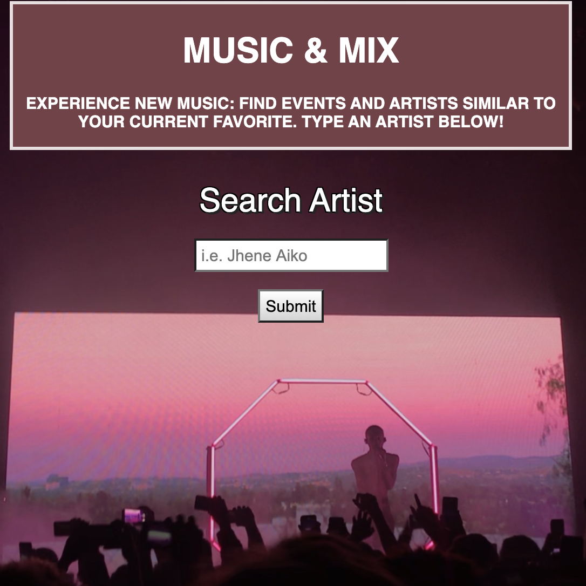

Hey Y'all! I'm Nathaly Cuya, a Thinkful student in the Engineering Flex Program.
About Me
Currently, I am an aspiring front end developer from Texas! I am a recent graduate from the University of Texas at Austin with a bachelor's degree in Sociology. Austin has been my home for the past 5 years and on my days off from work/school I like to explore new coffee shops, find new music, and implement new, fun ways to stay fit (currently trying yoga)! My interest in web development stemmed from the mantra that as a developer you are a student for life, constantly learning and solving new challenges. I love that as a programmer, you can build almost any idea from the ground up while also physically seeing the fruit of your labor on a website/app. My goal is to use the technical knowledge I've gained thus far as an outlet to be creative in my future projects while also presenting clean, responsive code. My current focus is mainly front-end based ie. Javascript, Jquery, HTML, and CSS. With time, this list will surely grow!
Projects
Plant Pals: Find and Rate Indoor Plants
"The purpose of this application is to assist the user find an indoor plant based on their needs and other users' experiences. The user is able to browse through a directory of indoor plants where basic a summary of each plant is listed. The user may also read and leave reviews. A short quiz is also implemented as a tool for users to find a plant match."

Generic VS. Brand: Know Your Medication Quiz App
“Generic VS. Brand” is a short and simple quiz application that tests the users’ knowledge. The app utilizes the following technologies: Jquery, JavaScript, HTML, and CSS. The entire project was then pushed to Github.

Music & Mix Application: Experience New Music
"The purpose of this application is to connect the user to upcoming music events/attractions while simultaneously presenting suggested artists/bands the user may also enjoy. The goal is to connect the user to new music experiences. This is achieved by using two popular APIs: TicketMaster and TastDive."
